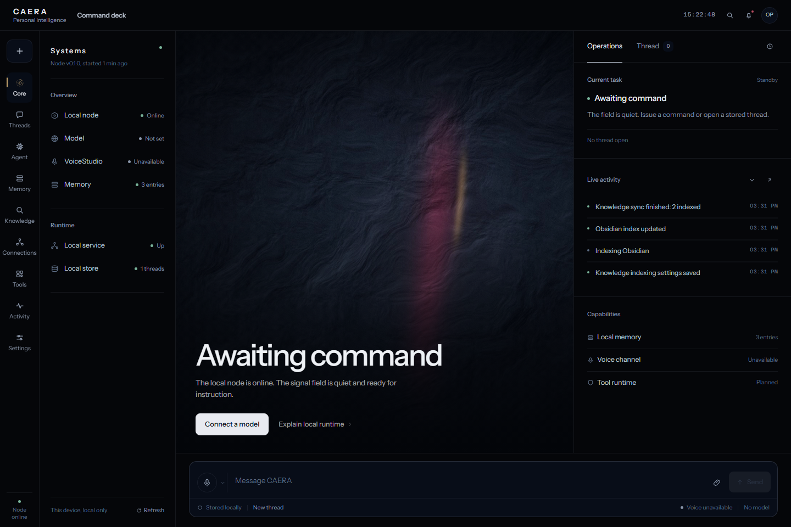
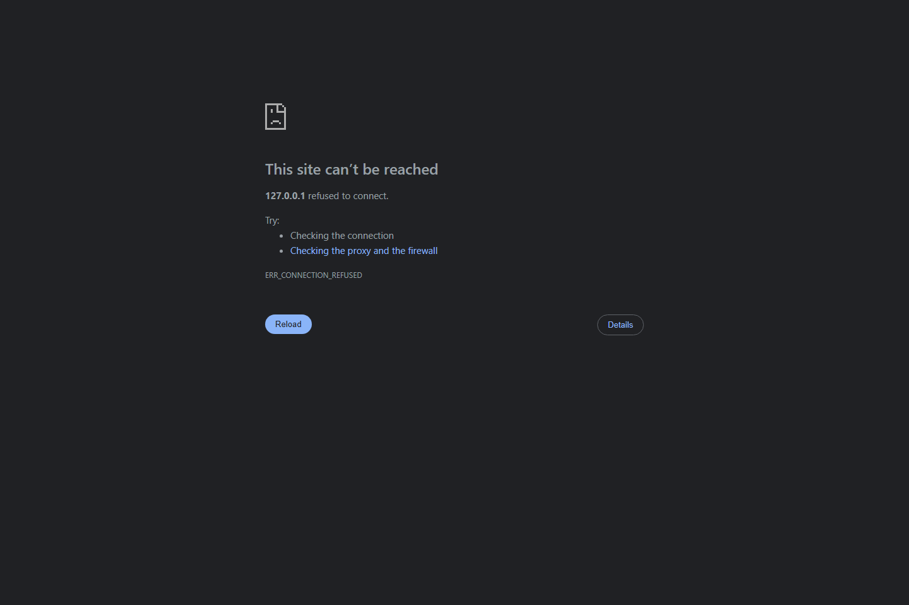

Conversations that survive the browser.
Streaming replies from five provider adapters, local routing, markdown, code, stop-and-keep-partial-text, local history and a persistent SQLite store.
SQLiteSSE streamlocal node
CAERA is a quiet command deck for thought, memory and controlled action. Conversations live in local SQLite. Approved knowledge stays on your disk. Your model key belongs to you.
Static showcase. This page does not run CAERA or answer prompts. Screens use sample data from the real interface.

Open full capture ↗01 / Premise
Most assistants begin by asking for everything: your mail, your notes, your calendar, your identity. CAERA begins with a boundary.
Storage is local. Integrations are explicit. Memory is written only after you approve it. Every tool is named, permissioned, bounded and recorded. When the machine does not have a capability, the interface says so.
“A personal system should feel like infrastructure you own — not a service that tolerates you.” CAERA design principle
02 / Interface
An instrument, a workbench and a record of what actually happened. These are captures of the application running against an isolated demonstration database.

Nothing is captured automatically. Every entry exists because you approved it.

One local index over approved content, with source-level control.

Read-only by default. Write access is independent, explicit and confirmed.

A closed tool registry, exact-action approval and no arbitrary command surface.
03 / Capabilities
Each capability below exists in the source preview. Unverified connections are labelled as such; there is no simulated success state.
Streaming replies from five provider adapters, local routing, markdown, code, stop-and-keep-partial-text, local history and a persistent SQLite store.
Facts, preferences and project context you explicitly save. Only relevant entries reach the selected provider.
Permissioned Obsidian, Notion, Logseq and Anytype adapters feed an opt-in FTS5 index.
Push-to-talk and spoken replies through a separate VoiceStudio install on loopback. No hosted speech dependency, no bundled model weights.
Bounded plans, registered tools, live permission checks and exact-action approvals.
No key? The interface says so. VoiceStudio absent? The text channel remains. A tool fails? It is recorded as failed. The agent may not invent a citation, a completed action or a found document.
04 / Second brain
Content enters only through an explicitly connected adapter. Each app keeps its own grants, status and exclusion rules.
Vault-scoped Markdown access, folder exclusions, search, read and confirmed writes.
Official API with a user-created internal integration token and shared-page scope.
Desktop HTTP API over loopback, with graph checks and independent grants.
Local API key and optional space selection, with Markdown reads and typed properties.
Notion, Logseq and Anytype adapters are implemented against their documented contracts. This release environment has no live accounts or running instances, so no connection success is claimed for them.
05 / Architecture
The browser talks to a loopback-only Express node. The node owns SQLite, provider keys, filesystem boundaries and every tool execution. There is no hosted account, telemetry pipeline or cloud database to switch off.
caera.db06 / Privacy
07 / Get started
CAERA is not yet distributed as an installer. The current release runs from source with Node.js 22.13+ and at least one provider key or local Ollama runtime. Tauri and Electron remain an evaluated packaging decision, not a shipped claim.
Repository publication is pending. The link above is the author profile; this page does not invent a repository URL. Update it before publishing.
# 1 — get the repository
git clone <repository-url> caera
cd caera
# 2 — install and configure
npm install
copy .env.example server\.env
notepad server\.env # add a provider API key
# 3 — build and run
npm run build
npm start08 / Release truth
No clean-Windows installation test has been completed on a separate machine.
Live Notion, Logseq and Anytype connection success remains unverified.
Voice chat requires a separately installed, configured VoiceStudio instance.
No desktop installer is published; no demo video is represented as live usage.
The project license is an owner decision that must be resolved before public release.
VoiceStudio is AGPL-3.0 and its models carry separate terms. None are redistributed here.